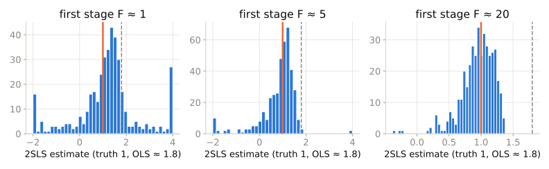

Session 6 · Mixtape chapter 7
\[\delta_{IV} = \frac{\text{effect of } Z \text{ on } Y}{\text{effect of } Z \text{ on } D} = \frac{\text{reduced form}}{\text{first stage}}\]
| Condition | Meaning | Testable? |
|---|---|---|
| Relevance | \(Z\) predicts \(D\) | Yes — first-stage F |
| Exclusion | \(Z \to Y\) only through \(D\) | No |
| Independence | \(Z\) as good as random w.r.t. \(u\) | No |
| Monotonicity | No defiers | No |
lm calls get them wrong
Truth is 1 (orange); naive OLS gives 1.8 (grey). With a weak first stage, 2SLS is spread everywhere and pulled toward the OLS answer. Rule of thumb: first-stage F above 10; nervous below 20.
IV is reduced form over first stage. Relevance you can test; exclusion you must argue; and the answer is a LATE for whoever the instrument moves.
Mixtape Workshops · built on Cunningham, Causal Inference: The Mixtape